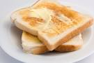

Toast

This is a time-honored family recipe
Quick and very simple way to curb your late night hunger. One of the most versatile meals you can make
Ingredients
- 30 grams of sliced bread(10cm x 11cm x 1cm)
- 5 Tablespoons butter
-
If you have a top loading toaster
- Take one piece of toast and gently place into top loading toaster
- Take a second piece of toast and gently place into top loading toaster
-
If you have a toaster oven
- Take piece of bread in right or left hand.
- With alternate hand, open toaster- NOTE: This step may vary depending on your toaster oven.
- Place piece of bread in toaster oven.
-
For both appliances
- Turn dial/knob determine the level of darkness to your desire
- [Assuming your toaster oven is plugged into a working electric socket] Turn on toaster
- Wait untill appliance completes operation
- remove toast(No longer bread) when the toasting of said toast is no longer toasting.
- Place toast on surface of object of your choice.
- Take nife in hand.
- Using nife, cut 4-7 tablespoons of butter.
- Spread said butter on toast.
- Eat.
Return home